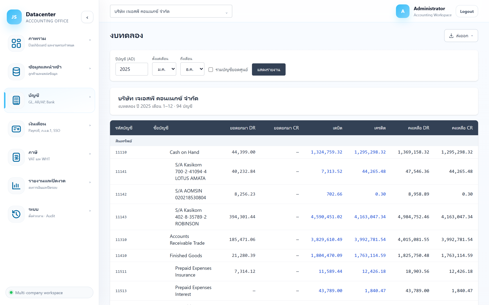

งบทดลอง
รายงานตรวจสอบยอดบัญชีทุกตัวในงวดเดียวกัน — ยอดยกมา ความเคลื่อนไหวในงวด และยอดคงเหลือ เป็นหน้าแรกที่ควรเปิดหลังนำเข้าข้อมูล เพื่อยืนยันว่ายอดครบและสมดุลก่อนไปทำงบการเงิน
หลังนำเข้าข้อมูลจาก Express เสร็จทุกครั้ง — ถ้ายอด “ผลต่าง DR−CR” เป็นศูนย์ทั้ง 3 ช่วง แปลว่าข้อมูลที่ได้มาสมดุลและพร้อมใช้ทำงานขั้นต่อไป
1. การเข้าใช้งาน
- เลือกบริษัทลูกค้า ที่แถบด้านบน (รายงานอ้างอิงบริษัทที่เลือกอยู่เสมอ)
- เปิดเมนู บัญชี → งบทดลอง
- ตั้งค่างวดที่ต้องการ แล้วกด แสดงรายงาน
หน้านี้ ไม่ดึงข้อมูลอัตโนมัติ — ต้องกด “แสดงรายงาน” ก่อนทุกครั้ง ถ้ายังไม่ได้เลือกบริษัท ระบบจะขึ้นข้อความ “เลือกบริษัทที่ header ก่อน แล้วจึงแสดงรายงาน” และเมื่อสลับบริษัท ตารางจะถูกล้าง ต้องกดแสดงรายงานใหม่
2. แถบตัวกรอง

| ตัวกรอง | คำอธิบาย |
|---|---|
| ปีบัญชี (AD) | ปีบัญชีเป็น ค.ศ. เช่น 2025 — ต้องตรงกับปีที่นำเข้าไว้ ไม่ใช่ปี พ.ศ. |
| ตั้งแต่เดือน / ถึงเดือน | ช่วงเดือนภายในปีบัญชีนั้น ค่าตั้งต้นคือ ม.ค.–ธ.ค. (ทั้งปี) — เลือก “ถึงเดือน” ก่อนหน้า “ตั้งแต่เดือน” ไม่ได้ |
| รวมบัญชียอดศูนย์ | ติ๊กเพื่อให้แสดงบัญชีที่ไม่มียอดเลยด้วย (ปกติซ่อนไว้เพื่อให้รายงานสั้นและอ่านง่าย) |
| แสดงรายงาน | ดึงข้อมูลตามเงื่อนไขข้างต้น — ระหว่างโหลดปุ่มจะเปลี่ยนเป็น “กำลังโหลด...” |
ข้อมูลที่ Express ส่งมาเป็นยอด รวมรายปี การดูทั้งปี (ม.ค.–ธ.ค.) จึงแม่นยำที่สุด ส่วนการเจาะดูเฉพาะบางเดือนอาจไม่ละเอียดเท่าที่ต้องการ ให้ใช้เป็นตัวช่วยดูแนวโน้มมากกว่าใช้ยืนยันยอด
3. หัวรายงาน
เหนือตารางจะมีกล่องสรุปบอก ชื่อบริษัท, ปีบัญชี, ช่วงเดือน และ จำนวนบัญชี ที่แสดงอยู่ ใช้ตรวจซ้ำก่อนพิมพ์หรือส่งออกว่าเป็นบริษัทและงวดที่ถูกต้องจริง
4. อ่านตารางงบทดลอง
ตารางมี 8 คอลัมน์ แบ่งเป็น 3 ช่วงเวลาอ่านจากซ้ายไปขวา: ยอดยกมา → เคลื่อนไหวในงวด → ยอดคงเหลือ
| คอลัมน์ | ความหมาย |
|---|---|
| รหัสบัญชี | รหัสผังบัญชีจาก Express |
| ชื่อบัญชี | ชื่อบัญชี — บัญชีย่อยจะเยื้องเข้าไปตามระดับชั้นของผังบัญชี |
| ยอดยกมา DR / CR | ยอดต้นงวด (ยกมาจากงวดก่อน) ฝั่งเดบิตและเครดิต |
| เดบิต / เครดิต | ความเคลื่อนไหว ภายในงวดที่เลือก (แสดงเป็นสีน้ำเงิน) |
| คงเหลือ DR / CR | ยอดปลายงวด = ยอดยกมา + เคลื่อนไหวในงวด |
ทุกช่องที่มีค่าเป็น 0 จะแสดงเป็นขีด — แทนเลข 0.00 เพื่อให้สายตากวาดหาตัวเลขจริงได้เร็วขึ้น
การจัดกลุ่มตามหมวดบัญชี
ระบบจัดแถวเป็น 5 หมวดตามประเภทบัญชี พร้อมแถบหัวหมวดสีเทา และแถว “รวม{หมวด}” ปิดท้ายทุกหมวด
| หมวด | ตัวอย่างบัญชี |
|---|---|
| สินทรัพย์ | เงินสด, ลูกหนี้การค้า, สินค้าคงเหลือ, ที่ดิน อาคารและอุปกรณ์ |
| หนี้สิน | เจ้าหนี้การค้า, เงินกู้ยืม, ภาษีค้างจ่าย |
| ส่วนของเจ้าของ | ทุนจดทะเบียน, กำไรสะสม |
| รายได้ | รายได้จากการขาย, รายได้อื่น |
| ค่าใช้จ่าย | ต้นทุนขาย, ค่าใช้จ่ายในการขายและบริหาร |
แถวสรุปท้ายตาราง
| แถว | ความหมาย |
|---|---|
| รวมทั้งสิ้น | ผลรวมของทุกบัญชีในแต่ละคอลัมน์ (แถบสีเข้มท้ายตาราง) |
| ผลต่าง DR−CR | ตัวเลขตรวจสมดุล — คำนวณแยก 3 ช่วง: ยอดยกมา, เคลื่อนไหวในงวด, และยอดคงเหลือ |
5. ตรวจว่างบสมดุลหรือไม่
แถว ผลต่าง DR−CR ต้องแสดง — (ศูนย์) ทั้งสามช่อง
แปลว่าเดบิตเท่ากับเครดิตทุกช่วง — ข้อมูลบัญชีสมดุลตามหลักบัญชีคู่
อย่าเพิ่งไปทำงบการเงินต่อ ให้ไล่ตรวจตามลำดับนี้:
- กลับไปที่เมนู นำเข้าข้อมูล ดูว่า batch ของปีนั้น ลงบัญชีแล้ว และตรวจผ่าน 100%
- ดูว่านำเข้าปีบัญชีซ้ำหรือข้ามปีหรือไม่ (ยอดปีอื่นปนเข้ามา)
- ถ้ายังไม่หาย ใช้เมนู บัญชีแยกประเภท เจาะดูรายบัญชีว่ารายการไหนผิดปกติ
6. ส่งออกรายงาน
เมื่อมีข้อมูลบนหน้าจอแล้ว ปุ่ม ส่งออก จะปรากฏที่มุมขวาบน เลือกได้ 3 รูปแบบ
| รูปแบบ | เหมาะกับ |
|---|---|
| Excel (.xlsx) | นำไปคำนวณต่อ ทำกระดาษทำการ หรือส่งให้ผู้สอบบัญชี |
| CSV | นำเข้าโปรแกรมอื่น |
| PDF (พิมพ์) | เปิดหน้าต่างพิมพ์ของเบราว์เซอร์ — เลือกปลายทางเป็น “บันทึกเป็น PDF” เพื่อเก็บไฟล์ |
ระบบตั้งชื่อไฟล์ให้อัตโนมัติในรูปแบบ trial-balance-{รหัสบริษัท}-{ปี} และใส่ชื่อบริษัทกับปีไว้ในหัวรายงานให้แล้ว
7. ปัญหาที่พบบ่อย
| อาการ | สาเหตุและวิธีแก้ |
|---|---|
| กดแสดงรายงานแล้วตารางว่าง | ยังไม่ได้นำเข้าหรือยังไม่ได้ Post ข้อมูลของปีนั้น — ไปที่เมนูนำเข้าข้อมูลเพื่อตรวจสอบ |
| ยอดน้อยกว่าที่ควรเป็น | อาจกรองช่วงเดือนแคบไป ลองตั้งเป็น ม.ค.–ธ.ค. แล้วดูใหม่ |
| บัญชีที่ต้องการหาไม่เจอ | บัญชีนั้นอาจยอดเป็นศูนย์และถูกซ่อน — ติ๊ก “รวมบัญชียอดศูนย์” แล้วแสดงรายงานใหม่ |
| ใส่ปีเป็น พ.ศ. แล้วไม่มีข้อมูล | ช่องปีบัญชีใช้ ค.ศ. เท่านั้น เช่น พ.ศ. 2568 ให้กรอก 2025 |
| ขึ้น “เกิดข้อผิดพลาด กรุณาลองใหม่” | ระบบติดต่อเซิร์ฟเวอร์ไม่ได้ชั่วคราว — กดแสดงรายงานซ้ำ ถ้ายังไม่หายให้แจ้งผู้ดูแลระบบ |
เมื่อยอดรวมสมดุลแล้ว ขั้นต่อไปคือเจาะดูรายการรายบัญชีที่ บัญชีแยกประเภท →